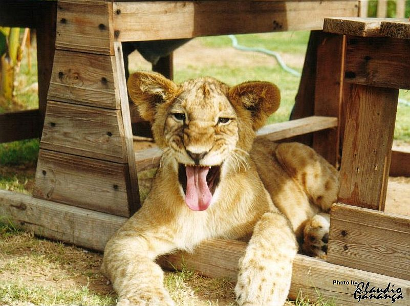

A seguir uma foto do mascote do Professor.
Foto:

Fig.1 - Leão Addo, do Addo Crocodile Ranch, na cidade Addo, em Eastern Cape, South Africa.
Biografia:
Segundo maior felino do mundo, o leão perde em tamanho apenas para o tigre. Os leões apresentam de 1,37 a 2 m de tamanho (corpo e cabeça), e sua cauda pode atingir até 100 cm de comprimento. O peso varia entre 120 e 190 quilos, mas vale destacar que já foram descritos indivíduos com mais de 250 kg.
USCS